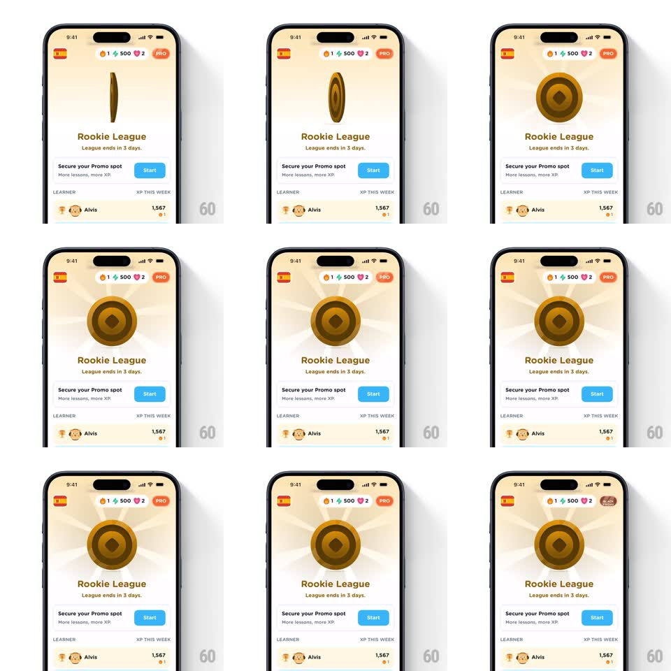

Media
Frame-by-frame

Rebuild this interaction 1:1: Airlearn's league badge reveal on the Rookie League screen - a gold 3D coin-style badge drops into the header area, spins on its Y-axis to reveal its embossed face, and a radial sunburst glow blooms behind it.

Rebuild this interaction 1:1: Airlearn's league badge reveal on the Rookie League screen - a gold 3D coin-style badge drops into the header area, spins on its Y-axis to reveal its embossed face, and a radial sunburst glow blooms behind it. ## Integration Integration: stack-agnostic spec - springs given as stiffness/damping, timed motions as duration + curve; map every value to your framework and animation library of choice. ## Scene Mobile league screen, cream background. Top stats bar (flame streak 1, gems 500, hearts 2, PRO pill). Below: "Rookie League" title, "League ends in 3 days." subtitle, a "Secure your Promo spot" card with a blue Start button, and a learner leaderboard row. The badge appears centered above the title, initially absent. ## Motion spec Pattern: celebratory badge entrance with 3D flip. - Badge enters edge-on (rotated ~80deg on Y) and spins to face forward (rotateY 80 -> 0, ~700ms, ease-out with slight overshoot past 0 and back, spring ~180/16). - As the face lands, a soft radial sunburst (light gold rays) scales up behind the badge (scale 0.6 -> 1, opacity 0 -> 1, 400ms, ease-out). - The badge then spins continuously on its Y-axis (slow loop, ~2.5s per revolution) showing rim and face. - Header text and cards below stay static; only the badge and glow move. ## Calibration - The reveal spin is the moment - one decisive flip, then settle into the slow idle rotation. - Glow stays subtle: light rays on cream, no full-screen flash. ## Reduced motion Badge fades in facing forward (200ms), static sunburst, no rotation. ## Don't miss - The badge has real thickness: the idle spin shows a narrow rim between face views. - The sunburst sits behind the badge only - it does not wash over the stats bar.